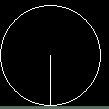
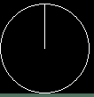

--------------I вариант------------------
- На вход подается натуральное число (целое, строго большее нуля). Выясните, чему равна сумма цифр этого числа.
- На вход подается натуральное число (целое, строго большее нуля). Выведите YES, если в числе от одной до двух цифр 4 и NO - в противном случае.
- Продублировать картинку
 на весь экран (и по ширине и по высоте).
на весь экран (и по ширине и по высоте).
--------------II вариант------------------
- На вход подается натуральное число (целое, строго большее нуля). Выясните, сколько в нем цифр 1.
- На вход подается натуральное число (целое, строго большее нуля). Выведите YES, если в числе от одной до трех цифр 3 и NO - в противном случае.
- Продублировать картинку
 на весь экран (и по ширине и по высоте).
на весь экран (и по ширине и по высоте).
--------------III вариант------------------
- На вход подается натуральное число (целое, строго большее нуля). Выведите YES, если хотя бы одна цифра 4 есть в числе и NO - в противном случае.
- На вход подается натуральное число (целое, строго большее нуля). Выведите YES, если в числе от двух до трех цифр 6 и NO - в противном случае.
- Продублировать картинку
 на весь экран (и по ширине и по высоте).
на весь экран (и по ширине и по высоте).
--------------IV вариант------------------
- На вход подается натуральное число (целое, строго большее нуля). Выведите YES, если нет ни одной цифры 7 в числе и NO - в противном случае.
- На вход подается натуральное число (целое, строго большее нуля). Выведите YES, если в числе от двух до трех цифр 1 и NO - в противном случае.
- Продублировать картинку  на весь экран (и по ширине и по высоте).
--------------V вариант------------------
- На вход подается натуральное число (целое, строго большее нуля). Выясните, чему равно произведение цифр этого числа.
- На вход подается натуральное число (целое, строго большее нуля). Выведите YES, если в числе от двух до трех цифр 7 и NO - в противном случае.
- Продублировать картинку
 на весь экран (и по ширине и по высоте).
на весь экран (и по ширине и по высоте).
--------------VI вариант------------------
- На вход подается натуральное число (целое, строго большее нуля). Выведите YES, если нет ни одной цифры 8 в числе и NO - в противном случае.
- На вход подается натуральное число (целое, строго большее нуля). Выведите YES, если в числе от одной до трех цифр 5 и NO - в противном случае.
- Продублировать картинку
 на весь экран (и по ширине и по высоте).
на весь экран (и по ширине и по высоте).
--------------VII вариант------------------
- На вход подается натуральное число (целое, строго большее нуля). Выясните, сколько в нем цифр 2.
- На вход подается натуральное число (целое, строго большее нуля). Выведите YES, если в числе от двух до трех цифр 9 и NO - в противном случае.
- Продублировать картинку  на весь экран (и по ширине и по высоте).
--------------VIII вариант------------------
- На вход подается натуральное число (целое, строго большее нуля). Выведите YES, если хотя бы одна цифра 5 есть в числе и NO - в противном случае.
- На вход подается натуральное число (целое, строго большее нуля). Выведите YES, если в числе от одной до двух цифр 2 и NO - в противном случае.
- Продублировать картинку
 на весь экран (и по ширине и по высоте).
на весь экран (и по ширине и по высоте).
--------------IX вариант------------------
- На вход подается натуральное число (целое, строго большее нуля). Выведите YES, если нет ни одной цифры 0 в числе и NO - в противном случае.
- На вход подается натуральное число (целое, строго большее нуля). Выведите YES, если в числе от двух до трех цифр 0 и NO - в противном случае.
- Продублировать картинку
 на весь экран (и по ширине и по высоте).
на весь экран (и по ширине и по высоте).
--------------X вариант------------------
- На вход подается натуральное число (целое, строго большее нуля). Выясните, сколько в нем цифр 3.
- На вход подается натуральное число (целое, строго большее нуля). Выведите YES, если в числе не более трех цифр 1 и NO - в противном случае.
- Продублировать картинку
 на весь экран (и по ширине и по высоте).
на весь экран (и по ширине и по высоте).
--------------XI вариант------------------
- На вход подается натуральное число (целое, строго большее нуля). Выведите YES, если нет ни одной цифры 9 в числе и NO - в противном случае.
- На вход подается натуральное число (целое, строго большее нуля). Выведите YES, если в числе от одной до трех цифр 8 и NO - в противном случае.
- Продублировать картинку
 на весь экран (и по ширине и по высоте).
на весь экран (и по ширине и по высоте).
--------------XII вариант------------------
- На вход подается натуральное число (целое, строго большее нуля). Выведите YES, если хотя бы одна цифра 6 есть в числе и NO - в противном случае.
- На вход подается натуральное число (целое, строго большее нуля). Выведите YES, если в числе от двух до трех цифр 0 и NO - в противном случае.
- Продублировать картинку
 на весь экран (и по ширине и по высоте).
на весь экран (и по ширине и по высоте).